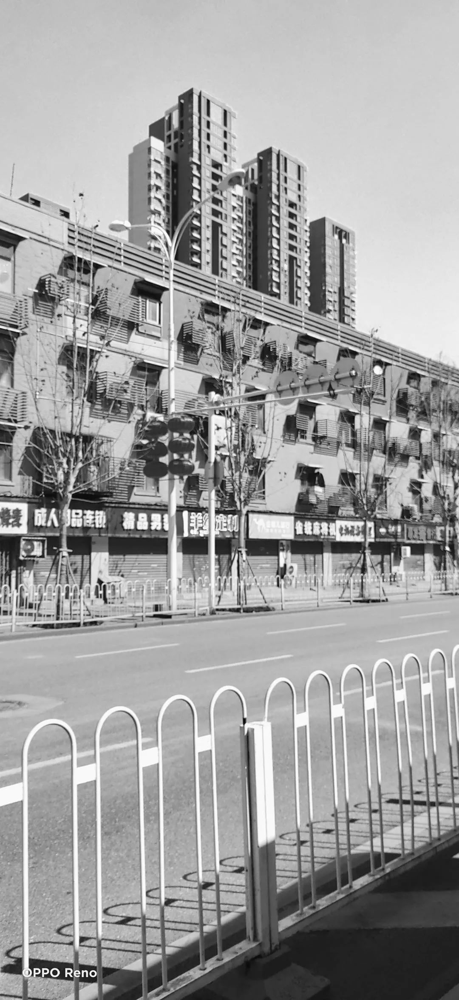
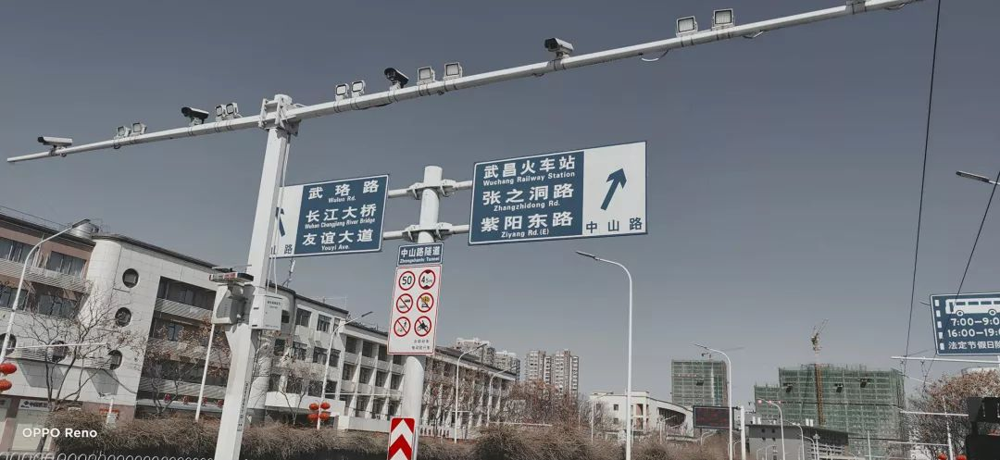

“请把我女朋友踢出志愿者群”
原文链接 备份链接 曹彦/ 华中科技大学新闻与信息传播学院 伍杨的一身“行头”几乎把整个人都吞了。 臃肿的棉袄外套着白色的防护服，戴着皱起来的蓝色防护手套，头顶是一个半旧棒球帽，只露出染过色的齐肩短发，透明护目镜下是两层叠加的口罩。她站在 …
六、出酒店记
因为大后方托运的大件物资只能走铁路运输，领队上报了总队安排接送车辆后，便在群里吆喝一声，让男同志一块出门。
防控的需要，我们除了上班就只能呆房间里，非常乐于听到有光明正大出去的机会。早上十一点阳光灿烂，我们坐上公车出发。司机师傅日常没开火车站的路线，说大WH这几年日新月异的太猛了，连他都不大认路，最好开个导航。目的地大概有二十多公里，一路上司机大哥充当起了导游的角色。
干净的街面，没有一车一人，几乎所有的店铺都关了，不过二十余日前还是满目繁华，如今无处话……
一路从东西湖经过汉阳，再进入武昌，司机大哥叨叨的介绍着各个景点，我因为11月初的时候过来开会，听着颇有感受。同车的伙伴们聊着享誉天下的热干面，长江大桥，户部巷，珞珈山的樱花，感叹着：待烟花三月，生民安康，自个隔离了十四天后，真想花几天时间走走。
师傅是本地人，说经此一劫，WH够呛，队友说一方有难八方支援，会重新崛起的。随后进入长江一桥，大家的兴致才慢慢调动起来。
 辛苦执勤的警察。不但交通要道，社区入口，酒店都有身穿防护服的工作人员进行测体温，排查登记等辛苦的任务
辛苦执勤的警察。不但交通要道，社区入口，酒店都有身穿防护服的工作人员进行测体温，排查登记等辛苦的任务
 右前方可通过桥上的电梯下去，走一公里就到了户部巷
右前方可通过桥上的电梯下去，走一公里就到了户部巷
 左上的电视塔
左上的电视塔
 名满天下黄鹤楼
名满天下黄鹤楼

到达车站附近的快运，我们排队等候取件，也见到偌大的仓库里堆满全国各地寄来的物资，取件装车，车上的紫外线灯已然使我们成为最土豪的医疗团队。

路上，我们让司机看看有没有路边营业的便利店，买几瓶肥宅快乐水安慰下自己，一路上无数的大小超市都关了，没关的排着长队我们又等不及。好不容易找到一家，整好遇到城管让其关门；我们最终走了几公里，才找到一间营业的便利店。
路过汉阳铁厂，汉阳兵工厂，不禁泛起了沉重的历史感。任何的苦难，终归会过去；历史也经常会一遍又一遍毫无新意的轮回，少数人的盛宴，多数人的悲苦。作为一个无信仰者，我们的摩西又在何方呢？
原文链接 备份链接 曹彦/ 华中科技大学新闻与信息传播学院 伍杨的一身“行头”几乎把整个人都吞了。 臃肿的棉袄外套着白色的防护服，戴着皱起来的蓝色防护手套，头顶是一个半旧棒球帽，只露出染过色的齐肩短发，透明护目镜下是两层叠加的口罩。她站在 …
原文链接 备份链接 对于“爆红”汪勇并不在意，作为一个组局的人，他还不能停下脚步。 记者 | 吴 雪 “快递小哥”汪勇，一夜之间成为了“网红”。报道发出后，新民周刊接到了数千位热心读者的留言，纷纷表示要捐款捐物。目前，我们已经成立专项小组 …
原文链接 备份链接 在武汉这座几近停摆的城市里，数以千计的志愿司机们仍在“正常运转”，充当城市的“摆渡人” 文 |《财经》记者 黄姝静 编辑 | 鲁伟 离开部队后，39岁的杜勇又一次上了“前线”。这一次，在家乡武汉，他冲在了疫区一线。送 …
原文链接 备份链接 除了牛奶和饼干，司机的后座上常会捡到医生和护士们留下的礼物，有时候是一罐八宝粥，或者一枚珍贵的N95口罩。 文 | 林秋铭 编辑 | 金匝 1 如果没有这场疫情，今年春节，52岁的李明和他的妻子将会出现在希腊。这是他和 …
原文链接 备份链接 从武汉离开的时候，他迎面看到有好多卡车正在往自己来的地方去，他没有办法去描述那一瞬间的感动。「我们可能都是一样的……那种感觉好像怎么都说不上来。」大概都是再普通不过的普通人，所以才选择了逆行。 文｜****林燕 编 …